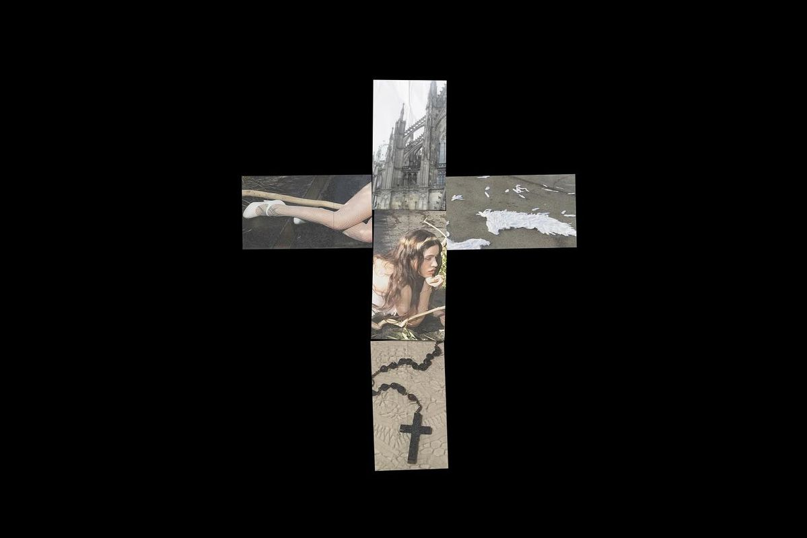
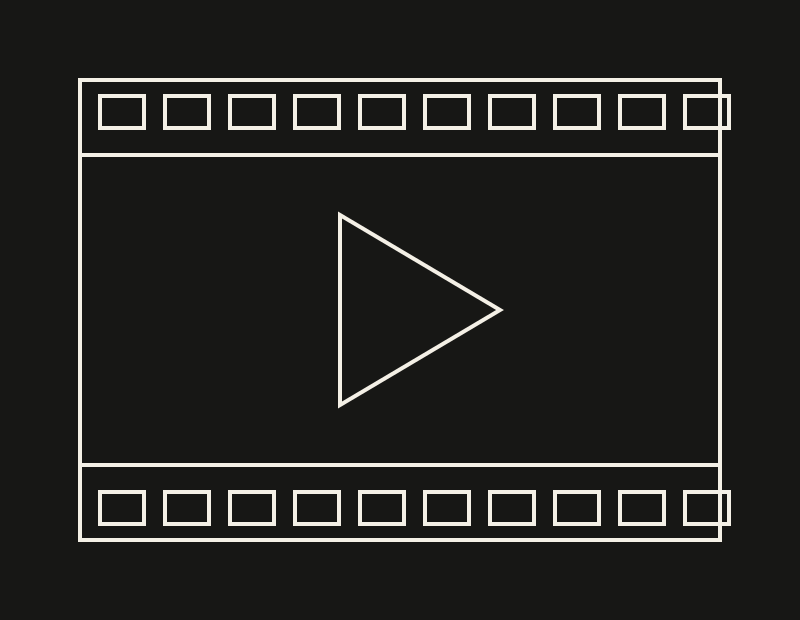
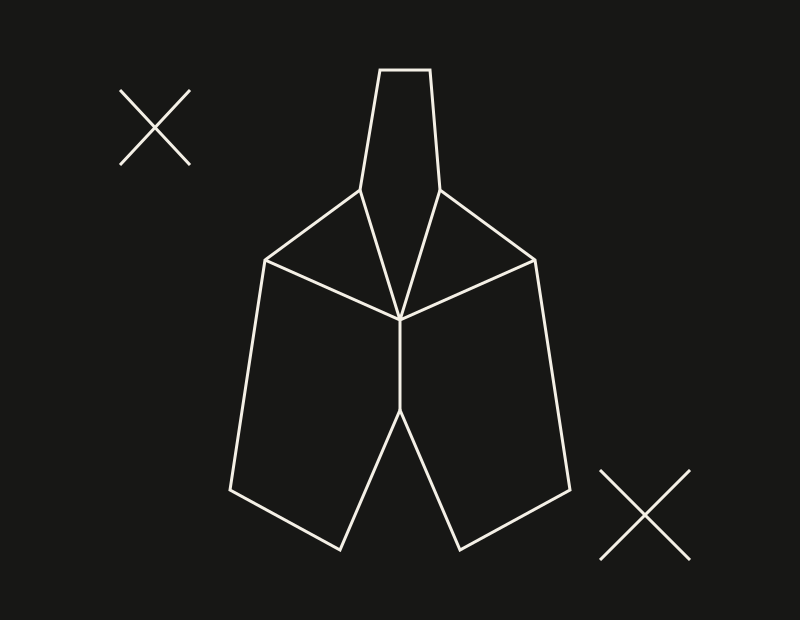
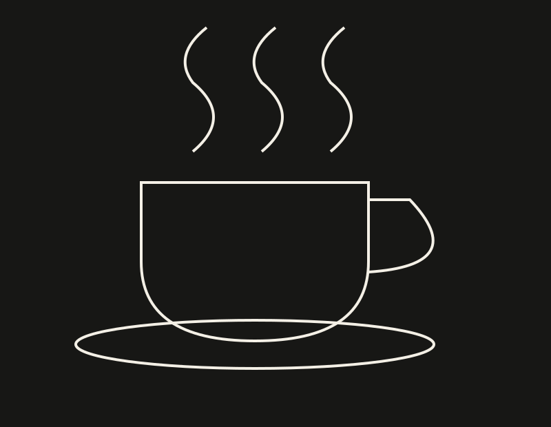

REVISTA DIGITAL / Nº 01CULTURA FUERA DE LO OBVIO
UN ARCHIVO DE COSAS QUE NOS MUEVEN
Música que se siente.
Historias que se quedan.
Imágenes que hacen ruido.

Una revista para quienes
se quedan viendo un poco más.
Entre una canción, una página y una escena hay conexiones que vale la pena explorar. Error 13 las reúne desde una mirada personal, gráfica y curiosa.
Últimas señales
06 ENTRADAS / 05 CATEGORÍAS SONIDO / NOCHE
SONIDO / NOCHEEscuchar en la oscuridad
Una invitación a escuchar un disco sin hacer otra cosa.
Leer artículo ↗SONIDO / DISEÑOUna canción, una imagen
Traducir lo que escuchamos a formas, texturas y contrastes.
Leer artículo ↗ LECTURA / IMAGINACIÓN
LECTURA / IMAGINACIÓNLeer como un laberinto
Libros que invitan a perderse y volver a mirar.
Leer artículo ↗
CINE / TERROREl miedo también se diseña
Mirar el terror desde el encuadre, las sombras y el silencio.
Leer artículo ↗
MODA / ARTEVestirse como un collage
Siluetas, maquillaje y detalles que construyen una identidad.
Leer artículo ↗
LUGARES / CAFÉUn café con otra mirada
Una guía personal para observar cafeterías con concepto.
Leer artículo ↗EXPLORA POR ESTADO DE ÁNIMO